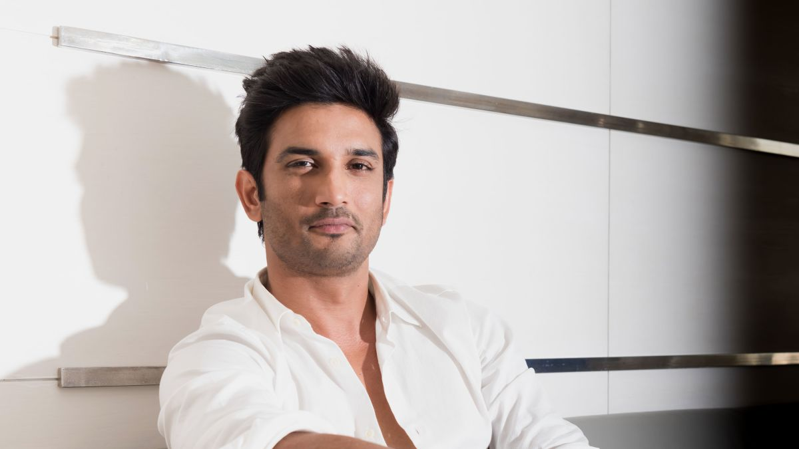

Sushant Singh Rajput (21 January 1986 – 14 June 2020) was an Indian actor, dancer, and entrepreneur. He began his acting career on television and gained recognition for his role in the soap opera Kis Desh Mein Hai Meraa Dil (2008–2009). He made his film debut in the buddy drama Kai Po Che! (2013).
Rajput was passionate about science and technology, and he actively promoted education and science among children. He was also known for his philanthropy work.
Despite his untimely demise, Sushant Singh Rajput's legacy lives on through his memorable performances and his impact on society.